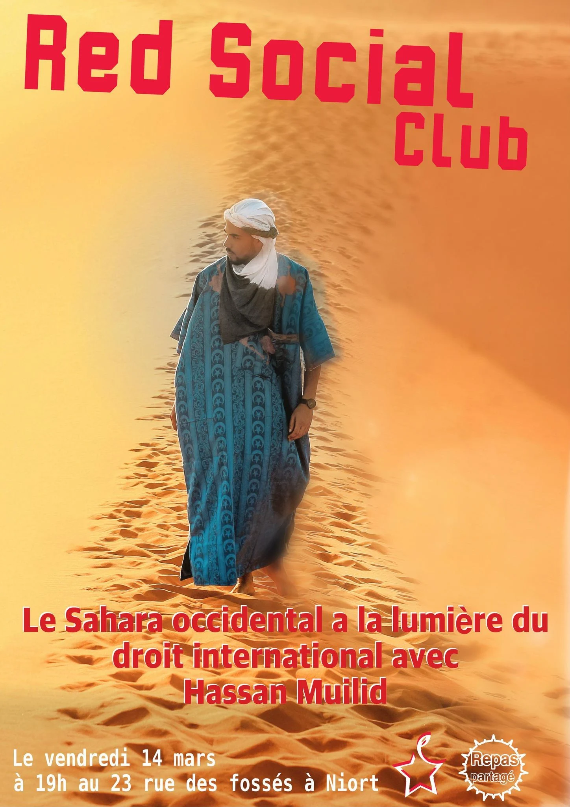

Annonce archivée
À Niort le 14 mars, le Sahara occidental à la lumière du droit international
Date indiquée par Facebook · 18 février 2025
Repères éditoriaux
Pour notre Red Social Club du vendredi 14 mars 2025, nous avions invité Hassan Muilid, représentant de l’association française des Sahraouis du Grand Ouest. Nous donnions rendez-vous à 19 h au 23 rue des Fossés, à Niort.
Texte conservé avec la publication
Prochain Red Social Club, Vendredi 14 mars à 19 heures au 23 rue des fossés à Niort.
Le Sahara occidental à la lumière du droit international avec Hassan Muilid, représentant de l’association française des Sahraouis du grand Ouest.

Sources
Archive rouge · export Facebook · AR-0002-FB-01189
À lire aussi · Red Social Club à Niort. « La lutte sahraouie » avec Hassan Muilid Ali